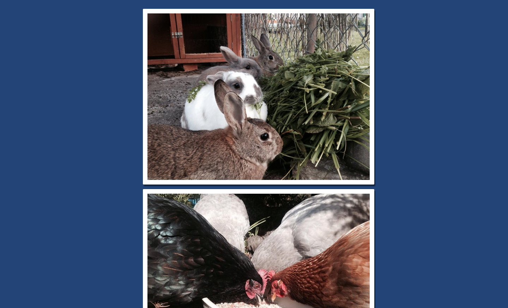

Beginner
Large CSS Image Gallery
This demo uses basic HTML and CSS to create a vertical stream of images which are all the same width.
View Interactive Code DemoThis demo uses basic HTML and CSS to create a vertical stream of images which are all the same width.
View Interactive Code DemoThis demo uses basic HTML and CSS to create a stream of small images which are all the same height.
View Interactive Code DemoIn this playground adventure, we use some awesome CSS2 and CSS3 to turn an otherwise unassuming list of images into a full-blown set of polaroid pictures. They even have an animation when you move your mouse over them!
View Full Tutorial